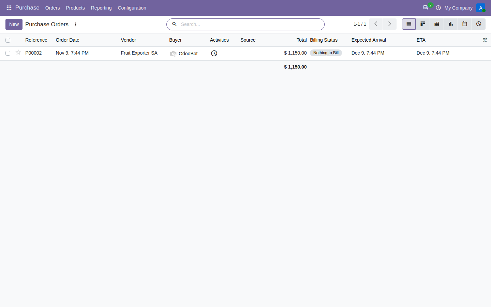
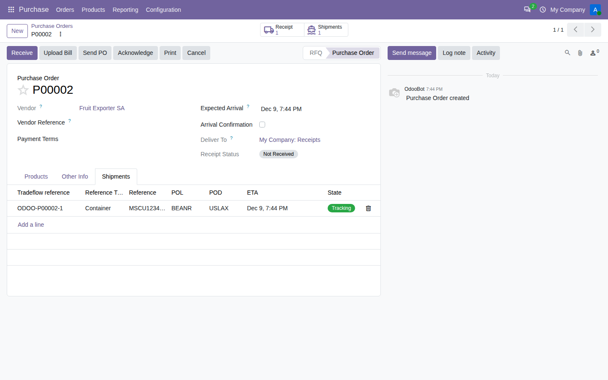
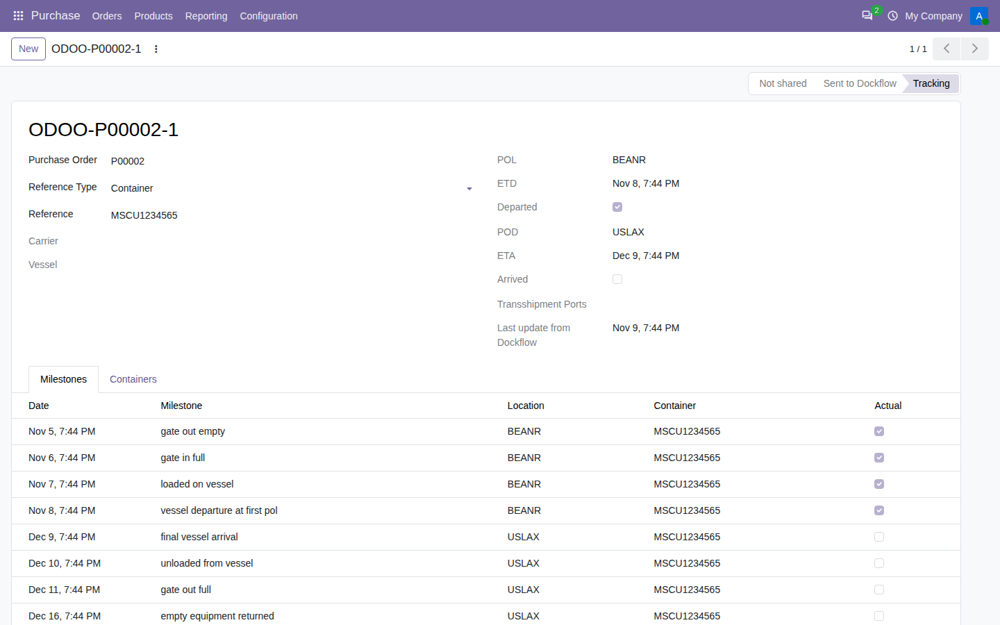
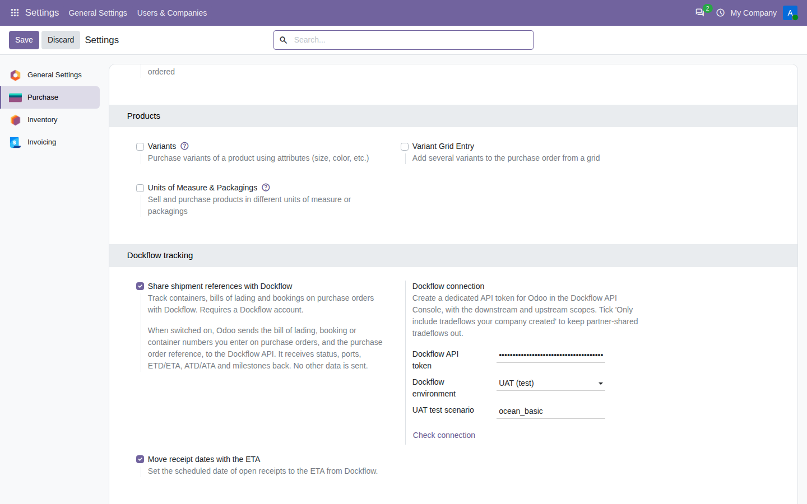

Add a bill of lading, booking or container number to a purchase order. The ETA, ports and milestones appear on the order and update by themselves.
A Dockflow account and a Dockflow API token with the downstream and upstream scopes. To request an account, mail support@dockflow.com.
Nothing is sent until you switch on "Share shipment references with Dockflow" in the Purchase settings. After that, the module sends the bill of lading, booking or container numbers you enter on purchase orders, and the purchase order reference, to the Dockflow API. It receives status, ports, ETD/ETA, ATD/ATA and milestones back. No other data leaves your database.




Tracking updates arrive every 15 minutes.